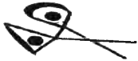

CADININ BAŞI
Şafak sökene kadar güneydeki tepelerde epey ilerlemiştik. Bardaktan boşanırcasına yağmur yağıyordu ve sırılsıklam olmuştum. Atın sağrısından yüzükoyun şekilde sarkıyordum ve aşağı yukarı zıplayıp durduğumdan görüş alanım çamurlu zeminle sınırlıydı.
Staigue Kalesi'ni ilk kez attan indirilip ayaklarım bağlanırken gördüm. Başımı kaldırınca önümüzde devasa bir taş duvar gördüm; taşlar çamur ya da alçı kullanılmadan ustaca örülmüştü. 'Halka kale' iyi bir tanımlamaydı zira kale tam olarak buydu: taştan inşa edilmiş, savunma amaçlı devasa bir halka. Herkes atından iniyordu. Çok geçmeden bunun nedenini anladım. Kaleye girmenin tek yolu atların geçemeyeceği kadar dar bir kapıydı.
Duvardaki o dar delikten geçince büyücülerin sığınağının içini ilk kez gördüm. Çatısı yoktu fakat duvarlar çok yüksekti ve saldırganları püskürtmek üzere kalenin siperlerine çıkmak için dokuz farklı merdiven vardı. İçerideki zemin yumuşak çamurdandı ve etrafta birkaç ahşap bina vardı. Bu taş kalenin çok eski olduğu belliydi, ancak ahşap yapılar nispeten daha yeniydi. Bu yapıların bazıları eve benziyordu, ortadaki yuvarlak yapınınsa farklı bir amaçla kullanıldığı hemen fark ediliyordu. Ve işte ben, bu yapıya doğru sürükleniyordum.
Hemen içeri girmedik. Önce zorla çamurlu yere oturtuldum ve etrafım dört kılıçlı muhafızla sarıldı. Orada beklerken az önce kaleye girmek için kullandığımız o dar geçit taşlarla örüldü. İşlem öyle ustaca yapılmıştı ki nereden girdiğimizi kestirmenin imkânı yoktu. Atları barınaklarına götürmek için dışarıda birinin kalmış olması gerektiğini düşündüm.
En sonunda ayağa kaldırıldım ve Kasap'ın peşinden bu büyük yapıya girdik. İçeride yerden yükseltilmiş daire şeklinde bir platform vardı. Vitraylı ve cilalıydı, üzerinde büyücülerin ifrit ya da daha farklı doğaüstü varlıkları çağırırken kullandıklarına benzer büyük bir pentagram çiziliydi. Ortaya bir masa ve birkaç sandalye yerleştirilmişti. Platformun etrafında zemin çamurluydu ve ayak bileklerine kadar çamura batmış en az dokuz silahlı muhafız vardı. Platformun üzerindeyse çıplak ayaklı yedi büyücüyle birlikte Cılız Shaun vardı. Kucağında battaniyeye sarılı oğlu Konal'ı tutuyordu. Shaun kukuletasını indirip başını öne eğdiğinden yüzü görünmüyordu.
Doolan onunla konuşmak üzere ahşap yapının kenarına yaklaştı. "Scarabek nerede?" diye çıkıştı.
"Başaramadım, tüm çabalarıma rağmen hâlâ tutuklu. Fakat düşmanı, oğlanla onu takas etmeye hazır. Onu bırakmanızı öneriyorum," dedi Shaun başıyla beni işaret ederek, "böylece ayini tekrarladığımızda Scarabek'i kurban edebiliriz."
"Kim bu düşman?" diye sordu büyücülerin lideri öfkelenerek.
Cılız Shaun başını kaldırdı, sol eliyle kukuletasını geriye iterek yüzünü ortaya çıkardı. Daha tek kelime dahi etmeden onu alt eden düşmanının kim olduğunu anlamıştım. Kanlı işareti alnına kazılıydı.

"Adı Grimalkin; suyun öte yanındaki güçlü bir cadı klanının katili. Şimdiye dek hiç böylesine yetenekli biriyle karşılaşmamıştım. Gücüm ve büyülerim ona karşı işe yaramadı. Tamamen insafına kalmıştım," diye itiraf etti Shaun.
Aniden içimi bir umut kapladı: Grimalkin buradaydı!
"Tek başına mı," diye sordu Doolan, "yoksa diğer klan üyeleri de yanında mı?"
"Tek başına."
"O halde haklanabilir."
Shaun başını çevirdi.
"Tanrıyı çağırmayı başaramamamıza rağmen bu denemenin bazı iyi sonuçları da oldu..." Kasap öz güvenli bir ses tonuyla konuşuyordu. "Bu sayede büyülerimiz güçlendi. O bir kişi; büyücülerden birine ortak gücümüzü verirsek içimizden biri bile onu öldürmeye yetecektir. Onu ben haklayacağım!"
Doolan başını öne eğip kendi kendine bir şeyler mırıldandı; Kadim Dil'de konuşuyor, kara büyü yapıyordu. Bunu yaparken diğer yedi büyücü de platformun kenarına toplanıp bir dakika boyunca büyü yaptıktan sonra ansızın sessizleştiler.
Sonra Doolan'a yaklaşıp kollarını uzatarak onun başına, omuzlarına ve göğsüne dokundular. Ardından bir kez daha büyü yapmaya başladıklarında Kasap dedikleri adam omuzları titremeye başlarken gözlerini kapattı.
Ballycarbery Kalesi'nde topçulara da buna benzer bir büyü yapmışlardı. Büyücüler onlara ortak güçlerini bahşetmeden önce son derece etkisizlerken bu ayinin ardından isabetli atışlar yapmaya başlayarak kale duvarında bir delik açmayı başarmışlardı. Doolan bu haliyle bile yenilmezdi. Daha ne kadar tehlikeli hale gelebilirdi? Grimalkin için gerçek anlamda bir tehdit teşkil edebilir miydi?
Sonuncu büyücü de sessizleşince birlikte ellerini geri çektiler. "Şimdi gidiyorum!" dedi Kasap dişlerini göstere göstere. "Düşmanımızın cesedini getireceğim!"
Odadan çıktı ve ben de onun ardından sürüklenerek dışarı çıkarıldım. Kaleden nasıl çıkacağını düşünüyordum. Girişi kapatmak için kullandıkları taşları yeniden çıkaracak değillerdi herhalde? Büyücü duvarın en tepesindeki burçlara uzanan basamaklara yöneldi. Basamakların hemen yanında demir bir direk vardı. Direğe kalın ve uzun bir ip bağlanmıştı. Kasap bu ipin ucundan tutup basamaklardan çıkmaya başladı. İpi kale duvarından aşağı attığım gördüm. Ardından duvarın öte yanına geçip gözden kayboldu. Aşağı inmek için ipi kullanıyordu.
Birkaç dakika sonra bağırdığını duydum ve muhafızlardan biri, ipi gerisingeri çekmeye başladı. İpin ucu siperlerin tepesinde belirdikten sonra muhafız çekmeye devam ettikçe bir yılan gibi basamaklardan indi. Tam o noktada yeniden zorla ıslak çamura oturtuldum. Beklemeye devam ettik.
* * *
Gün boyu bekledik; hiçbir şey olmadı. Muhafızlarım iki kez nöbet değiştirdi. Yine sırılsıklam olmuş, soğuk ve nemden titremeye başlamıştım ve açlıktan ölmek üzereydim.
Sonra karanlığın çökmesine yakın uzaktan gelen bir çığlık duyuldu. Bir şey acı çekiyor olmalıydı.
Muhafızlardan biri yere tükürdü. "Sadece bir hayvan," dedi. Ancak hayalet çırağı olarak edindiğim deneyim bana bunun bir insan sesi olduğunu düşündürüyordu.
Ara ara büyücülerden biri siperlere tırmanıp gecenin karanlığına bakıyordu. Bu saatte artık ay doğmuş olsa gerekti. Fakat gökteki yoğun bulut tabakası yağmurun süreceğinin habercisiydi ve gece iyice karardı. Duvarlara fenerler asılmış olmasına rağmen her nedense yaydıkları ışık son derece cılızdı; sanki etraftaki karanlık yoğun ve ağdalıydı. Büyücülerin uzaktan gelen seslerini duyabiliyor ancak ne konuştuklarını anlayamıyordum.
Sonra duvarın arkasından yüksek bir ses duyuldu: "İpi atın!"
Bu tok, kalın sesi tanımıştım. Gelen Kasap'tı. Acaba başarılı oldu mu? diye düşündüm.
Muhafızlardan biri ipin ucunu aşağı attı ve çok geçmeden Doolan surların üzerinde belirdi; asker elindeki feneri onun yüzüne iyice yaklaştırdı. Doolan basamaklardan aşağı indi. En yakınındaki duvara asılı fenere vardığında sol elinde bir şey taşıdığını fark ettim. Cılız Shaun, peşinde beş altı büyücüyle birlikte yuvarlak kulübeden çıkmıştı.
Arkamda durup Doolan'ın bize doğru gelmesini beklediler. Kasap sağ eliyle kemerinden uzun ve kanlı bir kılıç çıkardı; sol elindeyse saçlarından tuttuğu kesik bir baş vardı. Kusacak gibi oldum. Büyücüler iyice görebilsin diye kafayı havaya kaldırdı.
Bu yüzü tanıyordum: Çıkık elmacık kemikleri ve siyaha boyalı dudaklarıyla güzel ve acımasız bir yüzdü bu.
"Ey ahali! İşte cadının başı!" diye bağırdı.
Katil cadının yüzüne bakıyordum.
Grimalkin ölmüştü.